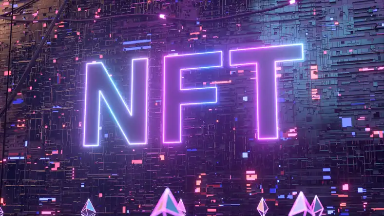
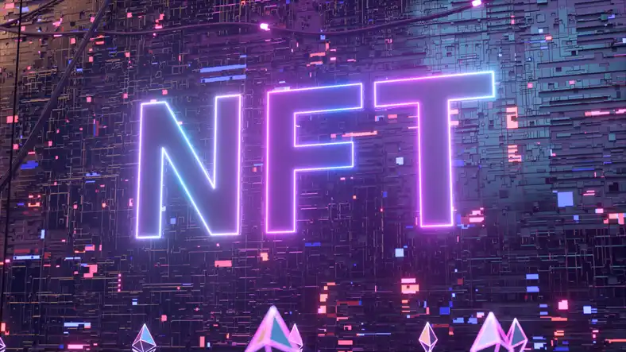

O que såo NFTs?
NFT é a sigla para non fungible token, ou em português, “token não fungível”, em outras palavras, que não pode ser copiado ou replicado.
NFT é a sigla para non fungible token, ou em português, “token não fungível”, em outras palavras, que não pode ser copiado ou replicado.

De maneira geral, eles funcionam como um certificado de autenticidade
digital, cuja veracidade é registrada na blockchain, o grande
“livro-razão” do mundo cripto.
Os tokens não fungíveis são itens
insubstituíveis, porque há apenas uma versão original disponibilizada
de cada token.
Os NFTs se tornaram uma das maiores tendências do mundo dos
criptoativos em 2021, com um aumento de 55% nas vendas em relação a
2020, que saíram de 250 para 389 milhões de dólares.
NFTs podem representar virtualmente qualquer tipo de item, seja ele real ou intangível, incluindo: